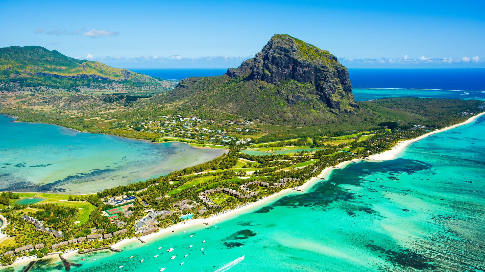

Buceando arrecife
Explorar un arrecife de coral mientras practicas submarinismo es una experiencia única e indescriptible. Sumergirse en las aguas cristalinas y encontrar un caleidoscopio de colores a tu alrededor es sencillamente mágico. Los corales vibrantes, los peces de colores brillantes y la serenidad bajo el agua te transportan a un mundo diferente. Es un ecosistema en armonía, lleno de vida y misterio. Sentir la ingravidez y escuchar solo tu respiración hace que te conectes profundamente con el entorno marino. Si buscas aventura y belleza natural, sumergirte en un arrecife de coral es una actividad imprescindible en tu lista de deseos.